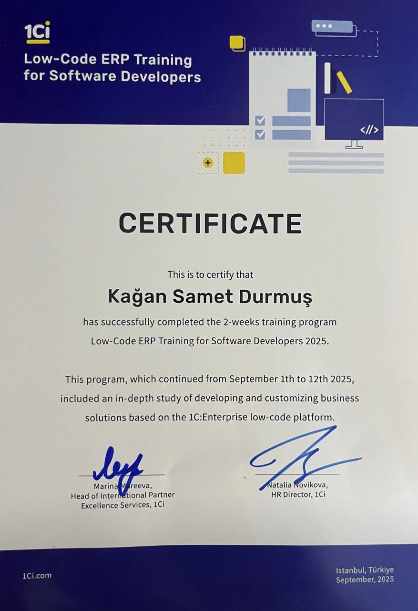

I am a developer combining Management Information Systems and Economics disciplines; creating modern solutions in Fintech, stock market, and data analysis fields, blending financial vision with technological competence.
Get in TouchHello! I am Kağan Samet Durmuş. I study Management Information Systems (MIS) with 100% English instruction at Topkapı University, while also doing a double major in Economics.
I am passionately attached to the Fintech world and stock market dynamics, where finance meets technology. I believe in the power of data; I analyze financial data using Python and SQL and work on models to interpret market movements.
As someone aiming for continuous improvement, I am increasing my competencies in data science while actively learning Russian. My goal is to produce innovative financial solutions by combining my technical knowledge with my economic vision.
I actively use advanced SQL queries and data visualization tools (Power BI) to make data-driven decisions. I transform complex data sets into meaningful insights and prepare strategic reports.
With my double major in Economics and passion for finance, I specialize in stock market and Fintech technologies. I analyze market data with a financial prediction bot I developed using machine learning and create strategic forecasts for the future.
With my 100% English education, I have B2+ level English proficiency. Additionally, I continue my active Russian (B1+) learning to strengthen my global communication competencies.
I bridge the gap between business and technology with the discipline of Management Information Systems. I am proficient in software development processes and modern IT solutions.
Some of my certificate and project posts from my LinkedIn profile.



A Python-based Telegram bot (@AskViraBot) that interacts with users, automates certain tasks, and
provides instant information. Enhanced with API integrations.
https://t.me/AskViraBot
The project you are viewing now; a modern, SEO-friendly personal portfolio designed with web technologies (HTML5, CSS3).
A comprehensive Finance and FinTech dictionary featuring a modern interface that ensures long-term
retention of financial terms using the Scientific Learning Path (SRS) and spaced repetition methods.
fintechterms.vercel.app
| Monday | Tuesday | Wednesday | Thursday | Friday |
|---|---|---|---|---|
|
09:00 - 12:00
Organizational Data Management
14:00 - 17:00
Introduction to Accounting
|
09:00 - 12:00
Datastructures and Database Management
14:00 - 17:00
Marketing Management
|
12:00 - 15:00
Business Process Analysis
|
09:00 - 12:00
Web Design and Internet Programming
09:00 - 14:00
Russian Course
|
09:00 - 14:00
Russian Course
|
My inbox is always open for your projects or just to say hello. I'll try to get back to you as soon as possible!